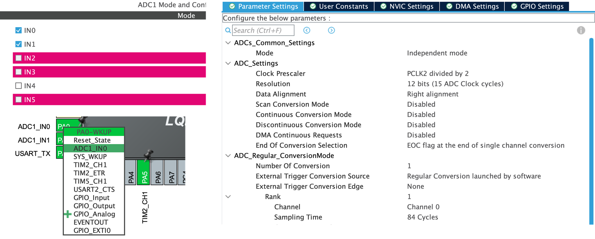

L09 - Analog-to-Digital Conversion
A potentiometer on pin PA0 gives any voltage from 0 V to 3.3 V. A GPIO input turns it into one bit.
Today the ADC (analog-to-digital converter) turns a pin voltage into a number from 0 to 4095. You will convert this number to millivolts, configure ADC1, and use a potentiometer to set the brightness of LD2.
L08 exit ticket: TIM3 with Prescaler = 15, Period = 4999, CCR1 = 1250. TIM4 captured rising edges at 4000 and 9000, a falling edge at 5250.
The timers measured when a pin changes between 0 V and 3.3 V. Today the ADC measures how many volts the pin has.
01
Part 1 of 3
An ADC measures a voltage at fixed times and gives each measurement a number. More bits give smaller steps.
01 · Conversion
02 · STM32 ADC
03 · Sensors
Every ADC reading has three steps: sample the voltage, quantize it to a level, encode the level as a binary number.
This example has 3 bits, so 8 levels. ADC1 on our board has 12 bits: 4096 levels, numbered 0 to 4095.
\[\text{levels} = 2^{N} \qquad\qquad \text{one step (1 LSB)} \approx \frac{3.3\ \text{V}}{2^{N}}\]
| Resolution | Levels | Largest value | One step at 3.3 V |
|---|---|---|---|
| 6 bits | 64 | 63 | 52 mV |
| 8 bits | 256 | 255 | 12.9 mV |
| 10 bits | 1024 | 1023 | 3.2 mV |
| 12 bits | 4096 | 4095 | 0.8 mV |
\[\text{voltage in mV} = \frac{\text{raw} \times 3300}{4095}\]
uint32_t raw = HAL_ADC_GetValue(&hadc1); // 0 to 4095
uint32_t mv = (raw * 3300u) / 4095u; // multiply first, then divideMultiply first. (raw / 4095u) * 3300u gives 0 for every raw below 4095: integer division drops the fraction.
A 12-bit ADC with a 3.3 V reference: mv = (raw * 3300u) / 4095u.
1 raw = 3100. What is the voltage in mV?
\(\dfrac{3100 \times 3300}{4095} = \dfrac{10\,230\,000}{4095} \;\Rightarrow\; \textbf{2498 mV}\)
2 The pin is at 825 mV. What is raw?
\(\text{raw} = \dfrac{825 \times 4095}{3300} = 1023.75 \;\Rightarrow\; \textbf{about 1024}\), a quarter of the scale
3 What does (raw / 4095u) * 3300u give for raw = 3100?
\(3100 \div 4095 = 0\) in integer division \(\;\Rightarrow\; 0 \times 3300 = \textbf{0}\)
4 How large is one step of a 10-bit ADC at 3.3 V?
\(\dfrac{3300\ \text{mV}}{1024} \approx \textbf{3.2 mV}\), four times the 12-bit step
Check with the share: 3100 is about three quarters of 4095, and 2498 mV is about three quarters of 3300 mV.
The sampling rate is the number of ADC readings per second. Between two readings the program sees nothing.
Rule: sample more than 2 times faster than the fastest change in the signal. A potentiometer or a light sensor changes slowly: 100 readings per second are enough.
In-lecture demo: change the signal frequency and the sampling rate.
02
Part 2 of 3
ADC1 finds the 12 bits one after another. You choose the pin and the sampling time. CubeMX writes the setup code.
01 · Conversion
02 · STM32 ADC
03 · Sensors
SAR means successive approximation register. The ADC compares the input with a test voltage, keeps the half where the input is, and repeats. Example: 4 bits.
ADC1 has 12 bits: 12 comparisons for every conversion, the most significant bit first.
In-lecture demo: step through a SAR conversion.
The STM32F401 has one ADC, ADC1. Every conversion takes the same path through it.
\[\text{conversion time} = \frac{\text{sampling time} + 12\ \text{cycles}}{\text{ADC clock}} \qquad\qquad \text{ADC clock} = \frac{16\ \text{MHz}}{2} = 8\ \text{MHz}\]
The capacitor charges through the sensor. A sensor with a high resistance charges it slowly and needs a longer sampling time. We use 84 Cycles: 12 µs for one reading.
An ADC input needs the pin in analog mode: MODER = 11. It is the last of the four pin modes from L04.
On the Nucleo board the Arduino pins A0 to A5 are ADC inputs. A0 is PA0, channel IN0. A1 is PA1, channel IN1.
Four settings make one ADC channel: 1 pin 2 resolution 3 mode 4 channel and sampling time.

1 1 2 3 4| CubeMX field | Value | What it gives you |
|---|---|---|
Pinout PA0 |
ADC1_IN0 |
PA0 in analog mode: Arduino A0, the potentiometer |
| Analog → ADC1 | IN0 ticked |
channel 0 is an input of the converter |
| Resolution | 12 bits (15 ADC Clock cycles) |
values 0 to 4095 |
| Continuous Conversion Mode | Disabled |
one conversion for each start from your code |
| Rank 1 · Channel | Channel 0 |
the channel that is converted |
| Rank 1 · Sampling Time | 84 Cycles |
12 µs for one conversion |
Only the sampling time is not a default: CubeMX starts with 3 Cycles. The clock is the Lab 6 clock, HSI 16 MHz; CubeMX divides it by 2 for the ADC.
PA0, choose ADC1_IN0. The generated pin setup is GPIO_MODE_ANALOG: MODER = 11. The same function switches on the ADC1 clock.
ResolutionADC_RESOLUTION_12B: values 0 to 4095. ADC_CLOCK_SYNC_PCLK_DIV2: 16 MHz ÷ 2, an 8 MHz ADC clock.
ModeContinuousConvMode = DISABLE: one conversion for each start. ADC_SOFTWARE_START: your code starts it.
ChannelADC_CHANNEL_0 is IN0, pin PA0. ADC_SAMPLETIME_84CYCLES: (84 + 12) cycles at 8 MHz, 12 µs.
CheckFind these lines in the generated files and check the values. ADC_SAMPLETIME_3CYCLES means the sampling time was not changed in CubeMX. Write nothing here.
hadc1.Init.ClockPrescaler = ADC_CLOCK_SYNC_PCLK_DIV2;2hadc1.Init.Resolution = ADC_RESOLUTION_12B;hadc1.Init.ContinuousConvMode = DISABLE;3hadc1.Init.ExternalTrigConv = ADC_SOFTWARE_START;sConfig.Channel = ADC_CHANNEL_0;4sConfig.SamplingTime = ADC_SAMPLETIME_84CYCLES;HAL_ADC_ConfigChannel(&hadc1, &sConfig);__HAL_RCC_ADC1_CLK_ENABLE();GPIO_InitStruct.Pin = GPIO_PIN_0;1GPIO_InitStruct.Mode = GPIO_MODE_ANALOG;HAL_GPIO_Init(GPIOA, &GPIO_InitStruct);HAL_ADC_Start() switches the ADC on and sets SWSTART. The hardware samples PA0 and makes the 12 comparisons. No code does this work.
WaitHAL_ADC_PollForConversion() waits until the hardware sets EOC, then clears the flag. Here the wait is 12 µs. The 2 is a time limit in ms.
ReadHAL_ADC_GetValue() returns the data register ADC1->DR. The number stays there until the next conversion ends.
ConvertMultiply first, then divide. raw and mv are global variables, so Live Watch shows them while the program runs.
PollingThe program waits 12 µs for each reading. That is short enough to wait for. HAL_Delay(500) in L07 waited 500 000 µs.
HAL_ADC_Start(&hadc1);1HAL_ADC_PollForConversion(&hadc1, 2);2raw = HAL_ADC_GetValue(&hadc1);3mv = (raw * 3300u) / 4095u;4uint32_t raw; // ADC value, 0 to 4095uint32_t mv; // the reading in mV03
Part 3 of 3
The program reads the potentiometer every 10 ms and sets the brightness of LD2. A second ADC channel reads a light sensor.
01 · Conversion
02 · STM32 ADC
03 · Sensors
CCR1.
TickThe L07 tick counter decides when to read. g_ms - t_adc >= 10: 100 readings per second and no HAL_Delay().
ReadThe three calls of the last slide: start, wait, read. raw is 0 to 4095.
Scaleraw * 1000 / 4095 turns 0 … 4095 into 0 … 1000. The top value is ARR + 1 = 1000: LD2 fully on, the +1 rule of L08.
WriteOne register write, as in L08. TIM2 uses the new duty from its next period.
Whole chainPotentiometer → voltage → raw → duty → CCR1 → brightness. The ADC is the input, the PWM is the output, and one line of arithmetic joins them.
uint32_t t_adc = 0;HAL_TIM_PWM_Start(&htim2, TIM_CHANNEL_1);while (1) { if ((g_ms - t_adc) >= 10U) {1 t_adc = g_ms; HAL_ADC_Start(&hadc1);2 HAL_ADC_PollForConversion(&hadc1, 2); raw = HAL_ADC_GetValue(&hadc1); duty = (raw * 1000u) / 4095u;3 TIM2->CCR1 = duty;4 } /* other work continues */}The potentiometer is at the middle of its range.
duty = (raw * 1000u) / 4095u; // LD2 on TIM2, ARR = 999
pulse = 500u + (raw * 2000u) / 4095u; // L08 servo: 500 to 2500 µs1 What are raw and mv?
half of 4095 \(\;\Rightarrow\; \textbf{raw} \approx \textbf{2048}\) and \(\dfrac{2048 \times 3300}{4095} = \textbf{1650 mV}\)
2 What is duty?
\(\dfrac{2048 \times 1000}{4095} = \textbf{500} \;\Rightarrow\;\) LD2 at 50 %
3 What is pulse?
\(500 + \dfrac{2048 \times 2000}{4095} = 500 + 1000 = \textbf{1500 µs} \;\Rightarrow\;\) the servo at 90°
4 Is raw * 3300u safe in 16 bits?
\(4095 \times 3300 = 13\,513\,500\). No: 16 bits end at 65 535. Use uint32_t.
One pattern: out = out_min + (raw * out_range) / 4095u fits any output range.
An LDR (light-dependent resistor) changes its resistance with light. An ADC measures voltage, not resistance. A fixed resistor turns the resistance into a voltage.
The code is the potentiometer code with another channel: duty = (raw * 1000u) / 4095u. Only the sensor changed.
ADC1 converts one channel at a time. 1 select the channel 2 convert it 3 call the function once for each sensor.
SelectHAL_ADC_ConfigChannel() writes the channel number into SQ1 of ADC1->SQR3 and the sampling time into SMPR2.
ConvertThe same three calls: start, wait, read. The function returns the value of the channel it was given.
UseTwo calls on every tick: first the potentiometer, then the LDR, 12 µs each. The two values are not from the same instant.
Sampling timeKeep 84 cycles. With 3 cycles the capacitor still holds part of the potentiometer voltage, and the LDR value follows the potentiometer.
uint32_t adc_read(uint32_t channel) { ADC_ChannelConfTypeDef s = {0};1 s.Channel = channel; s.Rank = 1; s.SamplingTime = ADC_SAMPLETIME_84CYCLES; HAL_ADC_ConfigChannel(&hadc1, &s); HAL_ADC_Start(&hadc1);2 HAL_ADC_PollForConversion(&hadc1, 2); return HAL_ADC_GetValue(&hadc1);}raw_pot = adc_read(ADC_CHANNEL_0); // potentiometer3raw_ldr = adc_read(ADC_CHANNEL_1); // LDRHAL_ADC_Start_IT() also sets EOCIE. In CubeMX: NVIC Settings, ADC1 global interrupt ticked.
Hardware12 µs later the conversion ends: the hardware writes DR and sets EOC. main() did not wait; it was doing other work.
GeneratedThe NVIC jumps to ADC_IRQHandler(), which calls HAL_ADC_IRQHandler(). It calls your callback and clears EOC, as in L07 and L08.
Your code2 read the value into a volatile variable and return. main() scales it and writes CCR1 on its next pass.
Whole pathThe L06 interrupt path with a new first box. For one reading every 10 ms the polling version loses only 12 µs: the lab uses polling.
HAL_ADC_Start_IT(&hadc1);1void HAL_ADC_ConvCpltCallback(
ADC_HandleTypeDef *hadc)
{
raw = HAL_ADC_GetValue(hadc);2
}| Register | Field | What it shows |
|---|---|---|
GPIOA->MODER |
bits 1:0 = 11 |
PA0 is an analog pin |
ADC1->CR1 |
RES = 00 |
12-bit resolution |
ADC1->CR2 |
CONT = 0 |
one conversion for each start |
ADC1->SMPR2 |
SMP0 = 100 |
84 cycles for channel 0 |
ADC1->SQR3 |
SQ1 = 0 or 1 |
the channel that is converted |
ADC1->DR |
0 … 4095 | the last result |
01 READING PROOF: pause after a reading: ADC1->DR and raw hold the same number. Turn the potentiometer, run, pause again: both changed.
02 CHANNEL PROOF: pause after adc_read(ADC_CHANNEL_1): SQ1 in ADC1->SQR3 reads 1.
01 DIVIDE FIRST: (raw / 4095u) * 3300u is 0 for every raw below 4095. Multiply first, then divide.
02 5 V HABIT: Arduino examples use 5 V and 1023. This board uses 3.3 V and 4095. Never connect 5 V to an ADC pin.
03 SHORT SAMPLING: 3 Cycles left in CubeMX with a high-resistance sensor: the value is wrong or follows the other channel.
04 NO START: HAL_ADC_PollForConversion() without HAL_ADC_Start() returns HAL_TIMEOUT, and raw keeps its old value.
05 WRONG CHANNEL: the sensor is on A1 and the code converts channel 0. SQ1 in ADC1->SQR3 shows it.
06 BLOCKING DELAY: HAL_Delay(10) between readings blocks the program. Use the g_ms tick.
Lab: read a potentiometer on PA0 and a light sensor on PA1 with ADC1. Show the values in millivolts in Live Watch, then use them to set the PWM outputs from Lab 7. SFR proof required.
✓ Explain sample, quantize and encode, and what 12 bits of ADC resolution mean.
✓ Convert an ADC value to millivolts and back with integer arithmetic.
✓ Calculate the conversion time from the ADC clock and the sampling time.
✓ Configure an ADC channel in CubeMX and read it on the 10 ms tick.
✓ Scale an ADC value to a PWM duty, and find MODER, SQR3 and DR in the SFR view.
Next: UART, sending these numbers from the board to your computer.
raw = HAL_ADC_GetValue(&hadc1); // 12 bits, 3.3 V: raw = 1241
mv = (raw * 3300u) / 4095u;
duty = (raw * 1000u) / 4095u; // TIM2: PSC 15, ARR 99901 VOLTAGE: What is mv?
02 CONTROL: What is duty, and what duty cycle does LD2 get?
03 TIME: Sampling time 84 cycles, ADC clock 8 MHz. How long is one conversion?
04 MECHANISM: How many comparisons did the SAR ADC make for this value?
05 EVIDENCE: Which register and which bits show that PA0 is an analog pin?
Every concept in this lecture, with page-linked sources: academic references.
EE5203 - L09